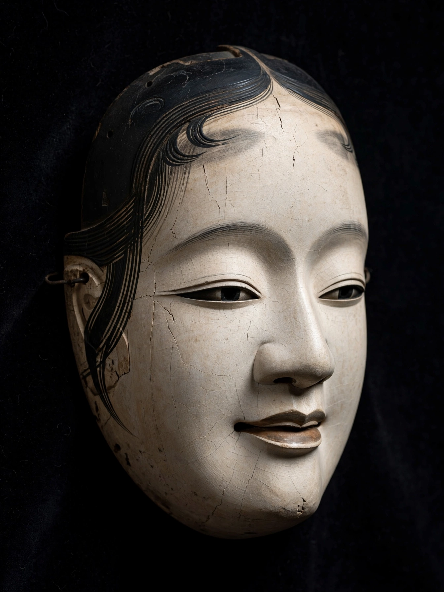

Zeami Motokiyo (Japanese: 世阿弥 元清; c. 1363 – c. 1443), also called Kanze Motokiyo after the Kanze school of Noh he helped found, was a Japanese aesthetician, actor, and playwright who, together with his father Kan'ami Kiyotsugu, raised the performance art of sarugaku into the refined classical theatre known as Noh. He wrote some fifty plays — among them Takasago, Atsumori, Izutsu, and Kinuta — and a series of secret treatises on acting and aesthetics, including the Fūshikaden ("Transmission of the Flower of Acting Style"), that are foundational works of Japanese theatre theory.
| Zeami Motokiyo | |
|---|---|
 Noh mask | |
| Born | c. 1363, Japan |
| Died | c. 1443 (aged about 80), possibly on Sado Island |
| Occupation | Playwright, actor, theatre theorist |
| Form | Noh theatre |
| Notable works | Fūshikaden; plays Takasago, Atsumori, Izutsu, Matsukaze |
| Father | Kan'ami Kiyotsugu |
Zeami was the son of Kan'ami, founder of the Kanze troupe, which performed sarugaku — an art of dance, song, acrobatics, and mimicry — for temple and popular audiences. A performance in 1374 or 1375 before the young shogun Ashikaga Yoshimitsu transformed the troupe's fortunes: Yoshimitsu took the beautiful boy actor under his patronage, and Zeami was educated at court in poetry and the classics. Zeami fused his father's vigorous performance art with courtly elegance, Zen aesthetics, and the linked-verse (renga) culture of the age to create the mature Noh.
After Kan'ami's death in 1384, Zeami led the troupe. His later years were shadowed by shogunal politics: Yoshimitsu's successors favored Zeami's nephew and later his younger son, and Zeami's elder son Motomasa died in 1432. In 1434 the aged Zeami was exiled to Sado Island on uncertain charges; he is thought to have died there around 1443.
Between about 1400 and 1418 Zeami composed more than twenty secret treatises (densho) for transmission within the troupe. The Fūshikaden theorizes the actor's lifelong training — "the flower" (hana) being the audience's sense of novelty and beauty that the master renews at every age — and principles such as monomane (imitation that penetrates to essence) and yūgen, the profound, half-revealed grace associated with the highest Noh. He codified the five categories of plays, the programme structure borrowed from gagaku (jo-ha-kyū: measured introduction, development, rapid climax), and the "two arts" of song and dance. The treatises, kept secret for centuries and published only in 1909, astonished modern readers and influenced twentieth-century theatre worldwide.
Zeami's masterpieces include Atsumori, in which the priest Renshō (formerly the warrior Kumagai) prays for the soul of the young Taira noble he killed — an episode drawn from The Tale of the Heike; Izutsu, a ghost-play of remembered love built on poems of Ariwara no Narihira; Matsukaze, about two sister ghosts longing for a courtier; and Takasago, a celebratory play still performed at weddings. His transformation of war-tale and court literature into dreamlike "phantasmal Noh" (mugen nō) — in which a travelling priest meets a ghost who relives its attachment — set the template of the art.
From Wikipedia, the free encyclopedia (recreated from memory).